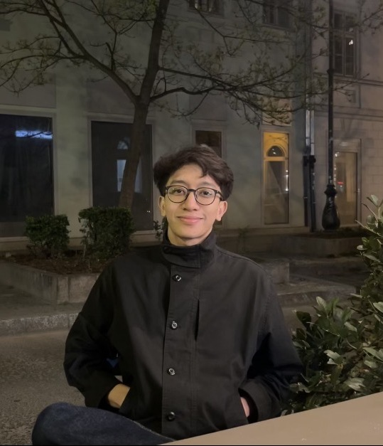

Syahirl Zaim
I am a Geophysics undergraduate at Imperial College London, with a particular interest in the intersection of artificial intelligence, energy, and natural resources. I am passionate about exploring how emerging technologies can transform traditional industries, unlock new opportunities, and address some of the world's most pressing challenges.
Beyond academia, I aspire to pursue entrepreneurship through building and developing innovative startups. I am particularly interested in translating ideas into practical solutions, leveraging technology and innovation to tackle real-world problems.
In 2025, I was awarded the fully funded MARA Prime Scholarship to pursue my undergraduate studies in the United Kingdom.
I grew up in Pahang, Malaysia, and completed my International Baccalaureate (IB) at Kolej MARA Banting. I am deeply grateful to the teachers, mentors, and community at KMB who played an important role in shaping my academic journey and encouraging me to pursue ambitious opportunities.
I have always been inspired by Malaysians who dare to think beyond conventional boundaries and build things that create meaningful impact, including individuals such as Mr. Suhaimi Ramly and Mr. Hazim Mohamad. Their journeys have strengthened my belief in Malaysia's potential to produce world-class innovators and entrepreneurs. I hope to play a part in that journey by building impactful technologies, pursuing ambitious ideas, and contributing to Malaysia's growth in the global innovation landscape.
